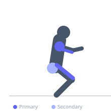

Exercise guide / Snatch Balance
Snatch Balance
The snatch balance is an Olympic weightlifting accessory exercise in which the bar is taken from the back rack position and the athlete uses a dip-and-drive to push themselves under the bar into a full overhead squat. It trains the speed of the third pull (turning the hands over and dropping under the bar) and reinforces the ability to stabilize a heavy snatch catch. The snatch balance is typically performed with higher loads than the actual snatch to overload the catch position.
Primary muscles
rectus femoris
deltoid anterior
triceps long head
Secondary muscles
gluteus maximus
infraspinatus
Stabilizers
supraspinatus
transverse abdominis
Equipment
Standard Barbell
Weight Plates
Power Rack (Squat Cage)


Starting position
- Bar across the back in a high bar squat position, with a wide snatch grip. Feet in squat stance.
Setup
- Take the bar from a rack with a wide snatch grip. The dip-and-drop is key — practice with an empty bar first.
Steps
- Step 1: Hold the bar on the back in a wide snatch grip, feet in squat stance.
- Step 2: Dip the knees 10–15 cm with a vertical torso.
- Step 3: Drive the bar upward slightly while simultaneously pressing yourself under the bar.
- Step 4: Rotate the hands and punch the bar overhead into a locked overhead squat position.
- Step 5: Stabilize in the full overhead squat, then stand.
Coaching cues
- Dip straight — drive the bar up slightly, then drop fast
- Punch the hands up and lock out
- Catch it — stabilize before standing
Breathing
- Brace before the dip. Exhale after stabilizing overhead.
Range of motion
- Full overhead squat depth with locked-out bar position.
Tempo
- Explosive dip-drive. Fast hands. Stable catch before standing.
Common mistakes
- Pressing the bar up high before dropping under — the goal is to use minimal upward force and mainly drop
- Catching with bent elbows
- Insufficient ankle or shoulder mobility causing the squat to collapse
Safety
- This exercise requires excellent shoulder and ankle mobility. Use a rack with safeties.
- Be prepared to drop the bar safely forward.
Training
- strength: 1–5 reps
- strength: 3–6 sets
- Rest: {'strength': 180}